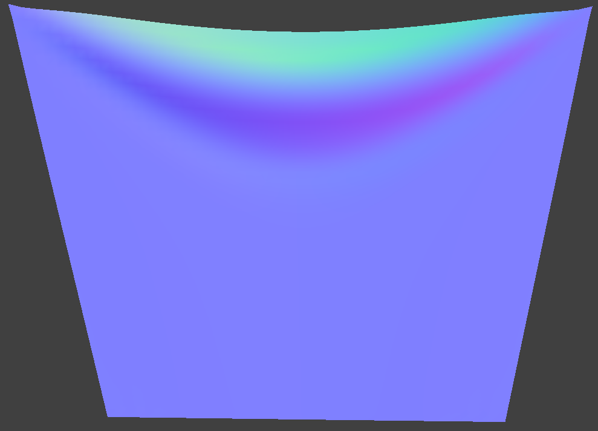

Simulation Via Numerical (Verlet) Integration
Make that cloth dance in the spring! (haha very pun, much fun)
For this part, we simulate cloth movement. First, we sum all forces acting on each point mass. This is achieved using physics, such as Newton's famous F=ma, along with Hooke's law (for springs):
where ks is a spring constant, where larger values simulate "stiffer" springs (return to rest faster), p_a and p_b are the positions of masses attached to the springs, and l is the spring's rest length.
Then, we use Verlet integration to compute a point mass's position at each timestep of the simulation according to the forces applied to each mass. Mathematically, this is
where t+dt is the next time step, d is a damping constant (more means more damping/less movement), t-dt is the previous time step, a_t is acceleration (calculated using F=ma), and dt is the time step.
To prevent springs from becoming unreasonably deformed, we also add constraints to each spring so that its length is at most 10% greater than its rest_length at the end of any time step. We make sure that the spring's direction is preserved, for our implementation. After implementing this part, we can now simulate our sheet of cloth.
Here are various ks values (N/m):
| ks | Image | Difference |
|---|---|---|
| 1 | Cloth is less "stiff" and as a result there are barely any wrinkles, since it just falls straight down without much constraints. | |
| 5,000 | Default, looks pretty natural, with some folding and wrinkles. | |
| 100,000 | Cloth is very "stiff" and thus it doesn't go as far from its starting position. |
Here are various density values (g/cm^2):
| ks | Image | Difference |
|---|---|---|
| 1 |  | Cloth is not "weighed down" as much, so there's barely a curve at the top, with it just slightly deforming. |
| 15 | Default, looks pretty natural, with some folding and wrinkles. | |
| 1,000 |

|
Cloth is "weighed down" much more, so the curve at the top is much more pronounced, with the wrinkles being smaller since the weight pulls it down and "stretches" it. |
| 100,000 | Cloth is "weighed down" so much that it looks flat, all the wrinkles are practically gone because of the sheer weight of the cloth, lol. |
Here are various damping values (%):
| ks | Image | Difference |
|---|---|---|
| 1.15 | Cloth's movements aren't as restricted, so it flutters. A lot. Like a butterfly, the slightest movement causes it to go fly away, back and forth, since the "frictional effect" of larger damping constants are more or less absent. | |
| 20 | Default, looks pretty natural, with some folding and wrinkles. | |
| 100 |

|
Cloth is pretty damped, so it falls very very slowly, and in general, is hard to move. However, it looks the same as default after it settles (which should also be the case once the 1.15% one decides to settle down like a good boi), since this only really affects how it moves, rather than its "convergence" state. |
Pinned_4 was rendered using the model's normals and the default parameters (all spring types enabled, density: 15 g/cm^2, ks: 5000 N/m, damping: 0.2%, gravity vector: (0, -9.8, 0) m/s^2)
Here is pinned_4's top view:
Here is pinned_4's bottom view:
Here is pinned_4's side view: